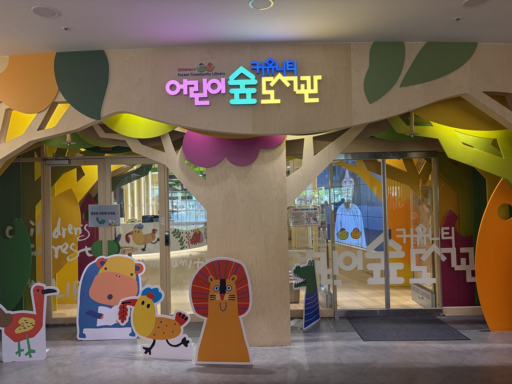
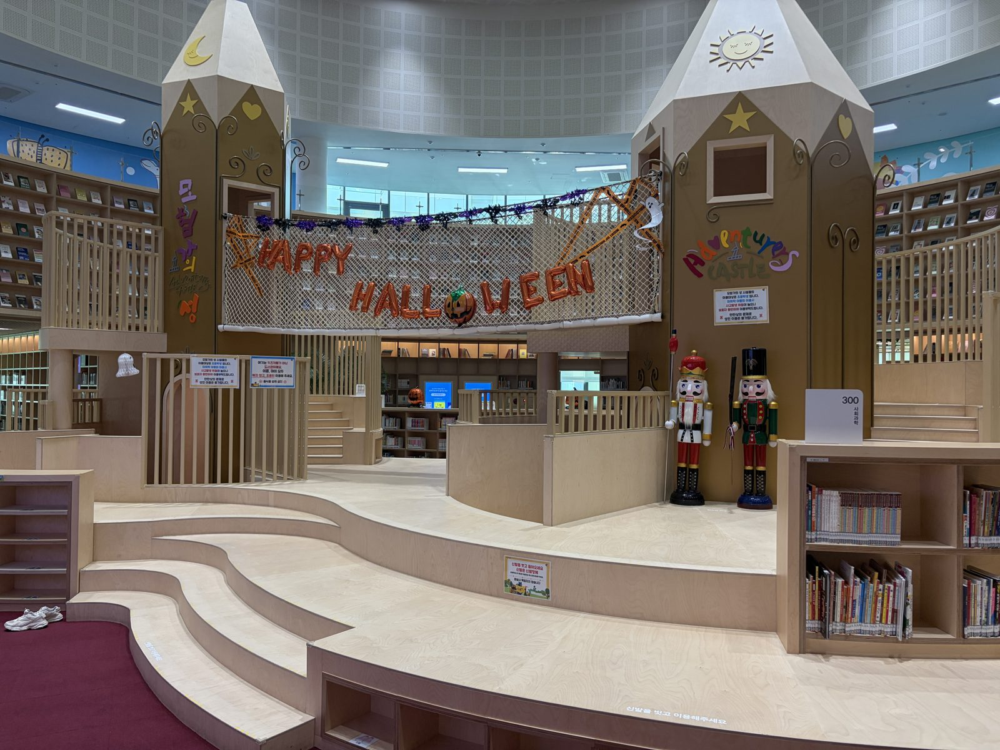
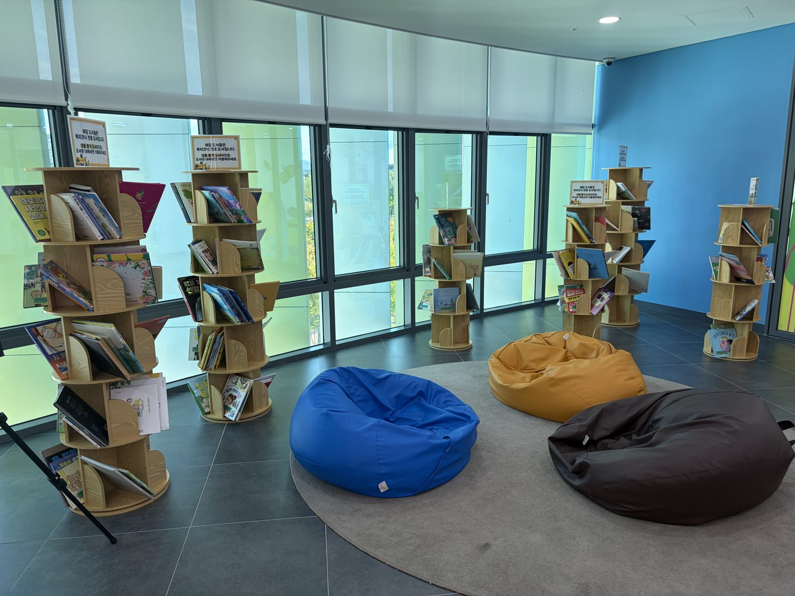
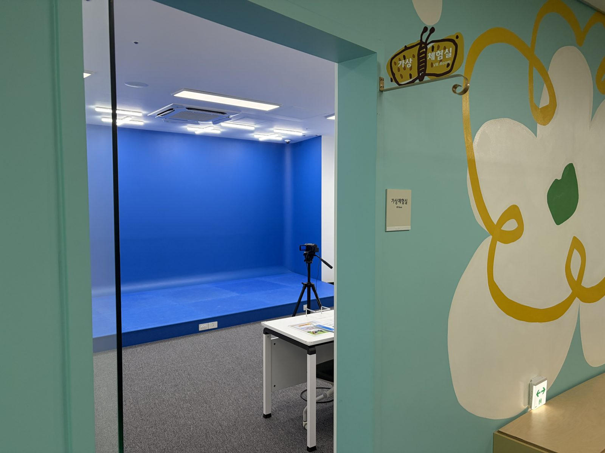
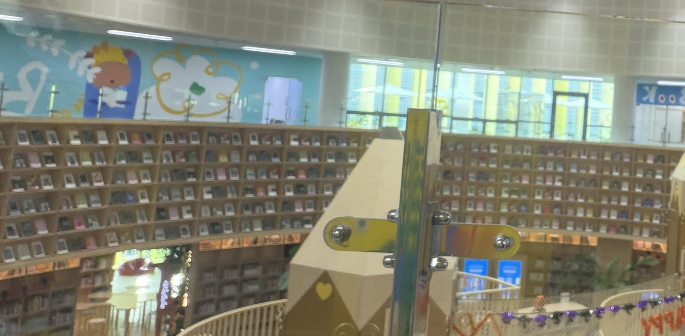

어린이 서비스 · 도서관 견학 보고
달성어린이숲
도서관
책과 놀이, 숲이 함께 자라는
어린이 특화 도서관 견학 보고
문헌정보학과 22214242 박채연
담당 교수 박광헌 · 견학일 2026. 10. 13
01 견학 개요
왜 ‘달성어린이숲도서관’이었나
많은 어린이도서관 중 세 가지 조건을 모두 갖춘 곳
1
책 읽으며 놀 수 있는 체험 공간
층마다 마련된 놀이·영어·ICT 체험실
2
예쁜 인테리어
숲을 테마로 한 공간과 책 속 세계를 구현한 인테리어
3
이용자가 많은 곳
SNS와 블로그를 통해 양육자들 사이에서 입소문 난 어린이도서관
위치
대구 달성군 현풍읍
달성군 교육문화복지센터 내
어린이실도 괜찮았지만,
어린이도서관은 한 번도 가 본 적이 없어
조금 멀어도 일부러 찾아감
02 기본 현황
숫자로 보는 달성어린이숲도서관
2025.7
개관
7월 1일 임시 개관,
7월 24일 정식 개관
3,299㎡
지하 1층 · 지상 3층
국공립 어린이도서관
등록기준(330㎡)의 10배
37,081권
보유 도서
영유아자료실 11,490권
어린이자료실 17,446권
운영 시간
평일 09–19시 · 주말 09–17시
월요일·법정공휴일 휴관
운영 방향
숲속 책 놀이터
글로벌 영어 도서관
세대공감 도서관
자료: 견학 보고서, 경북매일(2025.7.23), 헤럴드경제(2026.3.1), 도서관법 시행령 별표2
03 어린이실 vs 어린이도서관
‘방 하나’가 아니라 ‘건물 전체’가 어린이를 위함
| 구분 | 일반 공공도서관 어린이실 | 달성어린이숲도서관의 구현 |
|---|
| 공간 위상 | 성인실의 축소판으로 계획되기 쉬운 한 열람실 | 건물 전체를 연령별로 나눔: 영유아 → 어린이 → 창의 체험 |
| 공간 설계 | 획일적인 독서 위주 공간, 행동의 다양성 제한 | 오두막, 모험가의 성 등 이야기가 있는 테마 공간 |
| 활동 방식 | 조용히 읽고 빌리는 독서·대출 중심 | 눕고, 오르고, 만지는 공간에 ICT·코딩 체험까지 결합 |
| 이용 단위 | 어린이 개인 중심 | 가족열람실·수유실을 갖춘 가족 단위 체류 |
| 프로그램 | 전체 프로그램의 일부, 투입 자원이 적은 편 | 연령별 특화 프로그램 상시 운영 + 과학관·박물관 연계 |
자료: 장명숙(1988), 김종성(2008), 경북매일(2025.7.23), 어린이 서비스론 6주차
04 공간 구성
층마다 다른 숲, 다양한 공간
1F 키움숲
영유아자료실
요정들의 오두막
체험과 독서가 어우러진 오두막
요정들의 숲
캠핑존 콘셉트의 숲속 쉼터
영어키즈체험실
영어 놀이와 동화구연
가족열람실 · 수유실
2F 틔움숲
어린이자료실
모험가의 성
콜로세움형 서가와 연필 요새
해리포터 방
커다란 책 모양 입구의 테마 방
숲 열람실 · 고요의 방
멀티미디어실 · 프로그램실
3F 채움숲
창의 체험 공간
ICT 아트플레이
상상력을 디지털로 경험하는 놀이터
가상체험실
여러 직업을 가상으로 체험
코딩교육장
휴게데크 · 테라스
바람 쐬며 쉬어 가는 공간
강좌실 · 사무실 · 관장실
지하 1층: 무인반납함 · 자료: 견학 보고서, 경북매일(2025.7.23)
1F 키움숲 · 영유아
숲속에서 쉬며 읽는 곳
‘숲’을 모티브로 한
나무, 잔디, 버섯 오두막이
자연 속 쉼터 같은
느낌을 줌
가족열람실과 수유실까지
갖춰 영유아와 보호자가
함께 머물기 좋음
2F 틔움숲 · 어린이
상상력을 틔우는 판타지 공간

모험가의 성 (할로윈 장식)
중앙의 ‘모험가의 성’은
계절과 행사에 맞춰
모습을 바꿈
올 때마다 새로운 모습을
기대하게 만드는 장치이자,
공간 디자인에 들인 노력이
보이는 부분임
3F 채움숲 · 창의
생각을 채우는 체험 공간


코딩교육장, 가상체험실,
ICT 아트플레이로
창의적 사고력을 키움
안내데스크 대신
2층을 내려다보는 원통 구조와
미술 작품이 공간을 지킴
05 공간 평가
어린이 공간 계획 원리로 따져 보기
| 원리 | 달성어린이숲도서관에서 본 모습 | 평가 |
|---|
| 유희성 | 성, 버섯 오두막, 책 모양 입구, 아이들이 노는 게임 공간 | 충족 |
| 사회성 | 성인 도서를 함께 둔 가족열람실, 로비의 원형 소파와 카페 | 충족 |
| 신체적합성 | 서가용 미니 사다리, 낮은 세면대, 아이 눈높이의 테이블 | 충족 |
| 자율성 | 책메이트 키오스크로 스스로 책 추천받기, 빈백과 잔디 | 충족 |
| 안전성 | 어린이 테이블 모서리 라운딩 처리, 신발 벗고 입장 | 충족 |
| 쾌적성 | 큰 창과 3층 테라스, 다만 원통형 구조로 소음이 퍼질 우려 | 부분 충족 |
| 융통성 | 대형 고정 조형물이 많아 배치 변경이 어려움, 계절 장식으로 보완 | 부분 충족 |
기준: 어린이 서비스 공간 계획의 기본 원리, 어린이 공간 운영 평가 (어린이 서비스론 6주차)
06 직접 가 보니
어린이만의 도서관이 아니었음
책메이트 키오스크
나에게 맞는 책을 추천받고,
고른 장르 속 글귀를
랜덤으로 뽑아 주는 기기
보호자도 머무는 가족열람실
아이 책 옆에 성인 도서도 있어
보호자도 지루하지 않음
로비 카페와 원형 소파
저렴한 카페와 원형 소파,
누구나 쉬어 가는 열린 로비
3층 테라스
바람을 쐬며 수다도 떨고
통화도 하는 쉼터
세대가 함께 쓰는 공간
문화복지센터 안이라
어르신도 들러 쉬어 가심
신발을 벗고 들어가는 도서관
입구 신발장에 신발을 두고
바닥에 앉고 눕는 공간
07 프로그램 및 서비스
매달 열리는 독서문화 프로그램
모든 프로그램 무료
| 프로그램 | 대상 | 내용 |
|---|
| 책이랑 조물조물 | 6세–초등 저학년 | 그림책과 쿠킹클래스를 엮은 수업 (5월·11월) |
| 화석 탐험대 | 어린이 | 인근 달성화석박물관과 연계한 탐험 |
| AR 영어독서 · 영어캠프 | 초등학생 | 영어 원서 읽기와 독후 체험 활동 |
| 나는 그림책 작가 | 초등 4–6학년 | 자기 경험으로 이야기를 짓고 그림책 출판 |
| 2026 길 위의 인문학 | 가족 | 공원에서 자연을 관찰하고 이야기 나누기 (10.15–11.1) |
자료: 견학 보고서, 도서관 누리집 프로그램 안내, 아이뉴스24·시사뉴스 보도(2026)
장점
- 층마다 연령에 맞춘 공간 구성
- 가족열람실·수유실로
보호자와 함께 오래 머물 수 있음
- 모든 프로그램 무료,
과학관·박물관과 연계
- 계절별 공간 연출로
다시 오고 싶게 만듦
- 주변에 학교·식당·영화관이 모여
나들이하기 좋은 입지
단점 · 아쉬운 점
- 방문객이 몰려 혼잡·소음 우려
(곳곳의 정숙 안내문)
- 인기 프로그램은 선착순·소규모 정원
(영어캠프 기수당 15명)
- 10대 공간이 부족하고, 3층엔
상주 사서 없이 사무실·관장실만
- 방과 방으로 공간이 분리되어 있어
보호자 동반이 필요해 보임
09 개선 제안
숲을 더 잘 가꾸는 다섯 가지 방법
1
북 피크닉 존 살리기
바닥엔 그림 도화지를 깔아
창작 공간으로,
뒷벽엔 방명록·소통 게시판
2
소리의 지도 만들기
활동 존과 정숙 존을
바닥 색·표지로 구분,
주말엔 체험실 시간 예약제
3
체험에서 책으로
체험실 옆 관련 도서 서가,
영어 자료실엔
뉴베리·칼데콧 수상작 코너
4
더 공평한 신청
선착순 대신 추첨제,
취약계층과 첫 참여 가족에
우선 정원
5
10대까지 이어지기
과학관 연계 청소년
북클럽·진로 프로그램,
3층 사서 독서상담 시간
10 견학 소감 · 도서관 곳곳에 붙어 있던 안내문
“여기는 키즈카페가 아닌
도서관이에요.”
리뷰엔 ‘작은 소음도 제재한다’는 말이 있었지만,
실제로는 크게 뛰거나 소리칠 때만 조용히 안내하는 정도
도서관은 시대와 이용자에 맞춰 변하는
성장하는 유기체임
(랑가나단의 도서관학 5법칙)
다만 체험과 놀이를 넓히면서도
독서와 학습의 공간이라는 정체성을
지키는 균형이 필요함

11 결론
한 번 오고 끝나는 곳이
아니라, 어릴 때부터
친해지는 도서관
숲 콘셉트에 맞는 공간과 자연 친화적 프로그램으로
아이와 부모가 좋은 추억을 쌓기 좋은 곳
어린이도서관은 독서 습관과 비판적 사고력을 길러
아이들이 민주시민으로 자라도록 돕는 방향으로
나아가야 함
감사합니다